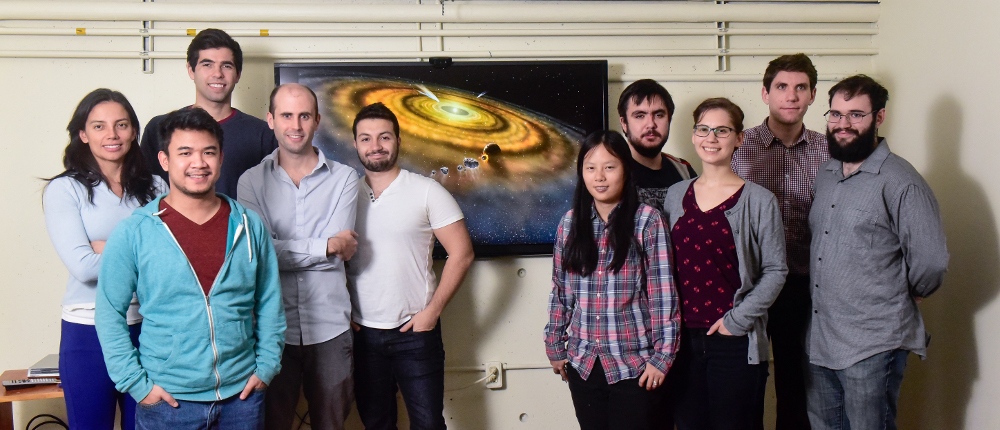
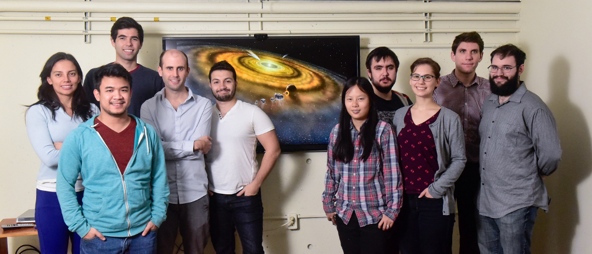

 CPS meeting (left to right): Joshua Guerrero, Ari Silburt, Daniel Tamayo, Mohamad Ali-Dib, Chelsea Huang (former), Aleksandar Rachkov, Alysa Obertas, Hanno Rein, Rejean Le Blanc
People
 CPS meeting (left to right): Joshua Guerrero, Ari Silburt, Daniel Tamayo, Mohamad Ali-Dib, Chelsea Huang (former), Aleksandar Rachkov, Alysa Obertas, Hanno Rein, Rejean Le Blanc
Hanno Rein is the Director of the Centre for Planetary Sciences. His research interestes include numerical methods, in particular N-body codes and integration methods for planetary systems. These methods allow his research group to study planet formation, in particular stochastic processes and planet migration. Other areas of research include the dynaics of Saturn's rings, hydrodynamics, and high perfomance computing using new hardware such as FPGAs.
Dr Rein's research group develops and maintains the open source N-body code and some of the world's fastest and most accurate numerical integrators.
Click here for Hanno Rein's personal website
Julian Lowman leads the Planetary Interiors Research group at the University of Toronto Scarborough. His group is engaged in the numerical modelling of convection in the interiors of rocky and icy planets and moons. Current research projects being investigated by the group include: modelling of stagnant-lid mantle convection in bodies with different relative core sizes, with a specific focus on possible models for the deep thermal structure in the Earth’s moon; investigation of the parameters controlling plate-like surface motion in models of terrestrial mantle convection and constraint on the parameters governing surface mobility as determined by cooling of the Earth’s core; and, the evolution of a compositionally distinct component in thermochemical models of convection in the Earth’s mantle.
The research group’s objective is to be able to produce temporally evolving three-dimensional models of the Earth, Moon and other rocky planets’ thermal structure covering their four and a half billion year history. This is done by implementing three dimensional models of terrestrial mantle convection featuring secular cooling. Constraints on the models include proerties like requiring an Earth-like core-mantle boundary heat flux that yields conditions for inner core growth. To this end we use multi-processor computing platforms like Compute Canada’s Niagara. Each 3D calculation requires approximately as much computing time as two-to-three hundred two-dimensional calculations. Accordingly the group’s ‘lab’ are high performance computing clusters.
Click here for Julian Lowman's personal website
While the primary focus of Dr. Pysklywec's research program is on the geodynamics of the Earth, his research group has also considered – and plan to continue studying – the dynamics of other planetary bodies. Specifically his research investigates aspects of the coupling between the lithospheric regions of Earth/planets and the underlying mantle convection. Dr. Pysklywec's group has found that a number of the dynamics that we understand for Earth may be applicable to other planetary bodies (e.g., M. H. Shahnas, R.N. Pysklywec and D. A. Yuen, Penetrative Convection in Super-Earth planets: Con- sequences of MgSiO3 post-Perovskite Dissociation Transition and Implications for super-Earth GJ876d, in press, JGR-Planets, 2018; Shahnas, M. H., R. N. Pysklywec, and R. Peltier, Layered convection in Io: Implications for short-wavelength surface topography and heat flow, Icarus, 225, 15-27, 2013.). The plate tectonic behaviour of Earth is somewhat unique, but comparison with other planets helps us understand the geophysical processes which may be responsible for this uniqueness.
Click here for Russell Pysklywec's personal website
Minerals are naturally occurring substances with regular atomic arrangements. Minerals occur in rocks, meteorites and some select minerals with the right properties can be manipulated by humans into gemstones. Dr. Tait studies minerals in order to understand processes which occur in the natural environment, on this planet and beyond. These processes include the formation of valuable natural resources, tectonic processes which have shaped the Earth, processes which gave rise to the planets and were present at the beginning of the Solar System. Most minerals have particular combinations of environmental constraints (temperature, pressure, pH, etc.) under which they form. These environmental parameters, operating at the atomic level, relate directly to the large scale geological processes operating on a planetary scale.
Dr. Tait’s research program is based on characterization of phosphate minerals on Earth and in space, specifically using diffraction and spectroscopy methods. Specifically, her research relates to how these types of minerals form, how they are bonded together and what this can tell us about planetary formation and exploit phosphorous economically to sustain population growth. Dr. Tait's research has been presented in publications, exhibitions, and lectures.
Dr. Tait is the Curator in charge of the Meteorite Collection at the Royal Ontario Museum. With 1.44 million visitors to the museum per year, we have a large visitor base and certainly I can see opportunities for the ROM and CPS to work together to provide programming and lectures related to the mandate of CPS and the ROM. I can certainly provide meteorites for events, and can also speak on this topic for lectures and symposiums.
Click here for Kim Tait's personal website
Dr. Valencia's research focuses on the structure, formation, and habitability of super-Earths. By studying the structure of low mass exoplanets (super-Earths and mini-Neptunes), her group infers the composition of these planets from a mass and radius measurement. Her group also maps out the pathways to habitability, studying the thermal evolution of rocky planets, including the effect of tidal heating. To understand how planets are formed, her group connects chemistry to end stages of planet formation with the goal of explaining the diversity in composition of low-mass exoplanets.
Click here for Diana Valencia's personal website
Dr. Weaver's work primarily revolves around measurements taken at the Polar Environment Atmospheric Research Laboratory (PEARL) on Ellesmere Island, near Eureka, Nunavut. It’s a fascinating place to work, and makes important measurements for research into climate, ozone depletion, atmospheric dynamics, and air quality. Dr. Weaver has also worked with several satellite datasets, including those from Canada’s Atmospheric Chemistry Experiment (ACE) mission.
Click here for Diana Valencia's personal website
Click here for Mohamad Ali-Dib's personal website
Click here for Alan Jackson's personal website
Click here for Daniel Tamayo's personal website
Click here for Noah Hammond's personal website
Supervisor: Dr. Hanno Rein
Supervisor: Dr. Hanno Rein
Supervisor: Dr. Julian Lowman
Supervisor: Dr. Kim Tait
Supervisor: Dr. Julian Lowman
Supervisor: Dr. Kim Tait